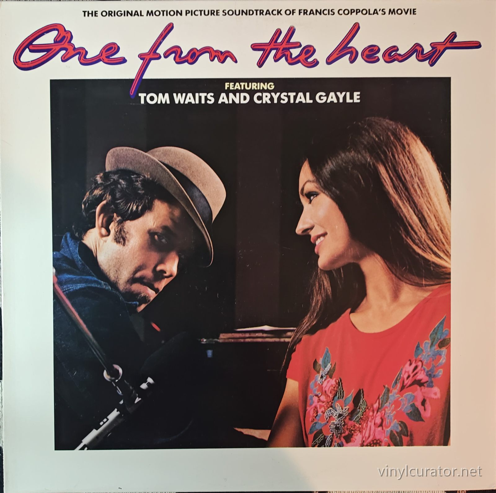
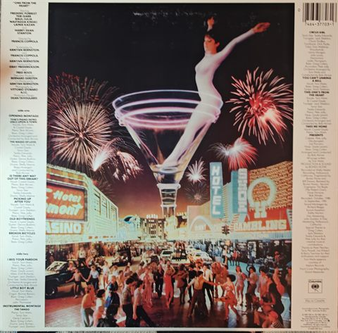
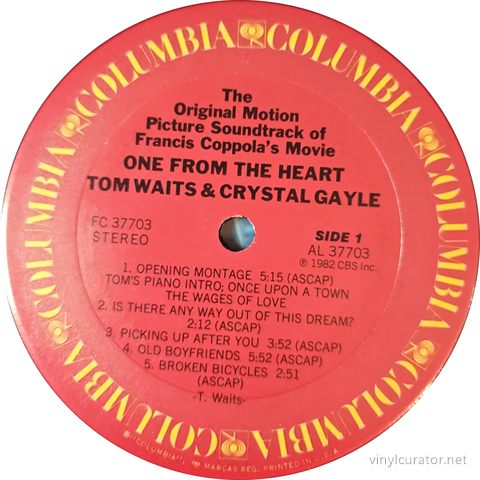
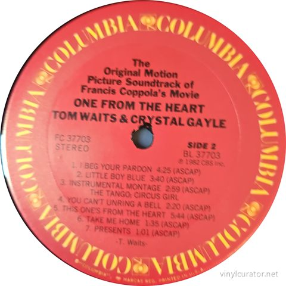

Thank you for buying this record. What follows is its documentation: the
pressing identified, the matrix / runout transcribed by hand from the dead
wax, and the condition as assessed before it was listed. It is yours to keep
with the record.
— Paul, Vinyl Curator
Tom Waits & Crystal Gayle
One From The Heart - The Original Motion Picture Soundtrack Of Francis Coppola's Movie
1982 · Columbia FC 37703 · Stereo · US (Columbia Terre Haute, IN pressing - etched 'T1' plant mark in deadwax) · LP · 33 1/3 RPM




Pressing details
Label
Columbia
Catalogue number
FC 37703
Year
1982
Mono / Stereo
Stereo
Country
US (Columbia Terre Haute, IN pressing - etched 'T1' plant mark in deadwax)
Format
LP
Speed
33 1/3 RPM
Genre
Stage & Screen / Jazz - Vocal Jazz, Lounge
Producer
Bones Howe
Composer
Tom Waits
Conductor
Bob Alcivar
Performer / Orchestra
Studio orchestra arranged and conducted by Bob Alcivar
Musicians
Tom Waits (vocals, piano), Crystal Gayle (vocals), Bob Alcivar (arranger, conductor), Greg Cohen (bass), Larry Bunker (drums, percussion), Jack Sheldon (trumpet), plus Hollywood studio orchestra; Pete Jolly (piano) and Dennis Budimir (guitar) are documented on the sessions
Matrix / Runout
Side A: PAL 37703-2D
KDISK T1
Side B: PBL37703-2D
KDISK 1A T1
Condition
Cover
NM
Vinyl
EX+
Variant chronology
1982 - US Columbia FC 37703 original, red repeated-COLUMBIA rim labels; Pitman, Terre Haute and Santa Maria plant variants, all Kendun (KDISK) mastered <- this copy
1982 - Canada Columbia FC 37703
1982 - European CBS pressings
2016 - Mobile Fidelity MFSL 1-448 Original Master Recording LP
c. 2023-24 - Pink translucent vinyl limited numbered reissue
This Pressing
Original US first press (1982) - Columbia Terre Haute, IN plant ('T1' etching in deadwax); PAL/PBL 37703-2D lacquers with KDISK (Kendun Recorders) mastering etchings.
The Album
Francis Coppola conceived One from the Heart as a small, intimate romance after Apocalypse Now, and asked Tom Waits to write a song cycle tracing a couple's breakup and reconciliation in a neon Las Vegas. Waits worked on the project for nearly two years, writing every song and cutting the album with producer Bones Howe (his collaborator throughout the Asylum years) and arranger Bob Alcivar, who dressed the tunes in lush, Nelson Riddle-flavored orchestral settings. Crystal Gayle was brought in as the female voice - Waits's wife Kathleen Brennan is widely credited with suggesting the pairing - and the contrast of Gayle's pristine croon with Waits's gravel-and-gin rasp became the album's signature, heard at its best on the duets 'Picking Up After You' and 'This One's from the Heart.' The film itself - a $26 million stylized flop - nearly bankrupted Coppola's Zoetrope Studios, and the soundtrack sat on the shelf amid legal wrangles before appearing in early 1982. The score earned Waits an Academy Award nomination (losing to Victor/Victoria), and the album was critically embraced as the most polished and romantic statement of his early career. It closed his first artistic chapter: within a year he had left Asylum, reinvented his sound on Swordfishtrombones, and rarely revisited this lush lounge-jazz idiom again, which makes One from the Heart a unique document - and a longtime fan favorite.
Tracklist
Side 1
1. Opening Montage: Tom's Piano Intro; Once Upon A Town; The Wages Of Love (5:15)
2. Is There Any Way Out Of This Dream? (2:12)
3. Picking Up After You (3:52)
4. Old Boyfriends (5:52)
5. Broken Bicycles (2:51)
Side 2
1. I Beg Your Pardon (4:25)
2. Little Boy Blue (3:40)
3. Instrumental Montage: The Tango; Circus Girl (2:59)
4. You Can't Unring A Bell (2:20)
5. This One's From The Heart (5:44)
6. Take Me Home (1:35)
7. Presents (1:01)
The Label
Red Columbia label with 'COLUMBIA' repeated around the rim interspersed with CBS note logos, 'PRINTED IN U.S.A.' rim text and '(c) 1982 CBS Inc.' - the design Columbia introduced c. 1981 alongside the FC catalog prefix for full-price pop, replacing the JC-era layout. The AL/BL 37703 side-specific numbers on the labels are standard Columbia practice. Crucially, the typed deadwax transcription shows an etched 'T1', Columbia's documented Terre Haute, Indiana plant mark, and the '-2D' lacquer suffix falls in Columbia's C/D Terre Haute lacquer series - so this copy is a Terre Haute pressing, not the Pitman pressing stated in the collector's notes (Pitman copies carry a 'P' stamp and E/F-suffix lacquers). Both plant variants are equal-status original 1982 first issues cut at Kendun Recorders, Burbank (the 'KDISK' etching, Kent Duncan's room).
Fidelity
Mastered at Kendun Recorders, Burbank (the 'KDISK' etching) and pressed at Columbia Terre Haute - a serviceable early-80s Columbia plant, generally regarded by collectors as a small step below Pitman for pressing consistency but fully capable of quiet, clean copies. The Bones Howe production is a big, polished analog studio recording (tracked at Wally Heider's, Hollywood), and the original US Kendun cut is warm and dynamic. In the album's fidelity hierarchy, the 2016 Mobile Fidelity Original Master Recording LP (MFSL 1-448) is the acknowledged top tier - audiophile reviewers praise its deeper, more three-dimensional presentation - with clean original 1982 US pressings like this one the reference vintage alternative; the recent colored-vinyl reissue and the 2004 expanded CD sit below both for pure analog sonics.
Notes
1982 Columbia FC 37703 - original US first pressing from the Terre Haute, IN plant (correcting the catalog entry's Pitman attribution). Red 'repeated COLUMBIA' rim labels with (c) 1982 CBS Inc. match the first-issue design. The etched 'T1' in the deadwax is Columbia's Terre Haute plant mark, and the PAL/PBL 37703-2D matrices with KDISK etchings confirm Kendun-mastered lacquers; the Discogs Terre Haute variant ('T1 PAL 37703-2D Kdisc') matches exactly. No club, promo, or reissue markers; rear barcode is consistent with the 1982 issue.
Documenting collections
I do this work for other people’s collections too — documenting a
collection record by record, researching individual pressings, and preparing
collections for sale or for insurance. If you have a collection you would like
documented, or a record you want identified properly, get in touch:
email
This record’s page: https://vinylcurator.net/albums/tom-waits-crystal-gayle-one-from-the-heart-the-original-motion-picture-soundtrack-of-francis-coppola-s-movie/